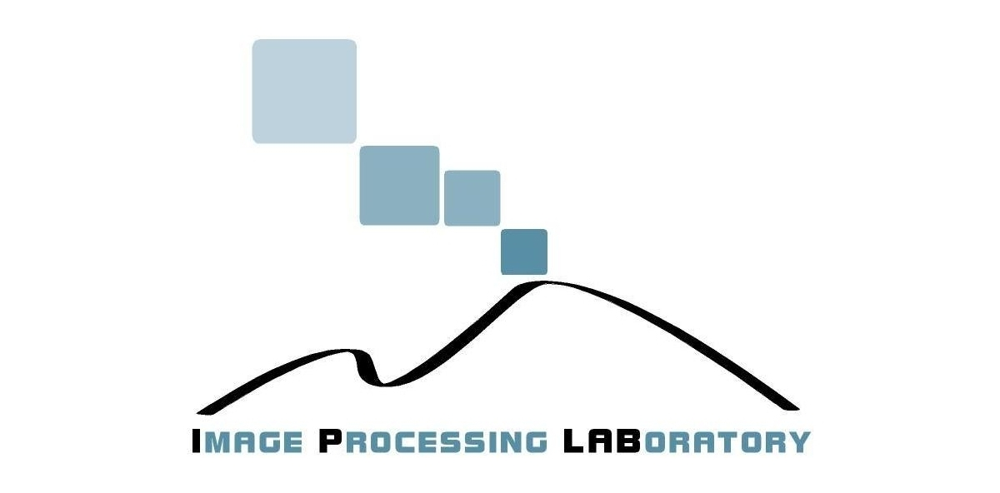

Collecting and labeling a large amount of data can be very expensive in terms of time and cost. Driven by this motivation, we investigated how using synthetic data in first-person vision to train models can reduce the need for labeled real domain-specific data. We propose a pipeline for generating and labeling synthetic human-object interactions from a first-person point of view using 3D models of the target environment and objects, which can be cheaply collected using commercial scanners.
We present EgoISM-HOI a new multimodal synthetic-real dataset of Egocentric Human-Object interactions, which contains a total of 39,304 RGB images, 23,356 depth maps and instance segmentation masks, 59,860 hand annotations, 237,985 object instances across 19 object categories and 35,416 egocentric human-object interactions.
DownloadIf you find the code, pre-trained models, or the EgoISM-HOI dataset useful for your research, please citing the following paper:
@article{leonardi2024synthdata,
title = {Exploiting multimodal synthetic data for egocentric human-object interaction detection in an industrial scenario},
journal = {Computer Vision and Image Understanding},
volume = {242},
pages = {103984},
year = {2024},
issn = {1077-3142},
doi = {https://doi.org/10.1016/j.cviu.2024.103984},
author = {Rosario Leonardi and Francesco Ragusa and Antonino Furnari and Giovanni Maria Farinella},
}
Additionally, consider citing the original paper:
@inproceedings{leonardi2022egocentric,
title={Egocentric Human-Object Interaction Detection Exploiting Synthetic Data},
author={Leonardi, Rosario and Ragusa, Francesco and Furnari, Antonino and Farinella, Giovanni Maria},
booktitle={Image Analysis and Processing -- ICIAP 2022},
pages={237--248},
year={2022}
}
Visit our page dedicated to First Person Vision Research for other related publications.
